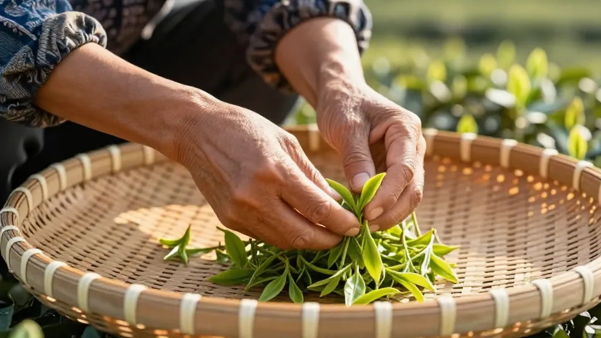

🍵 天刚蒙蒙亮，四点三十分。阿凤姐像往常一样坐在惠州惠城区东湖花园一区沿江商铺89-136（凤凰茶业）的茶台边，那把二十年的紫砂壶已经温好了。但今天的茶台 conversation 不一样——手机里的茶圈消息炸开了锅。
喜茶开创的"茶特调"正成为2026年新茶饮行业最受关注的品类，中国茶"出海"的话题也上了人民网头条。茶叶圈，真的变天了。
📌 一、茶特调"上位"：茶叶终于从配角变成主角了
以前，奶茶店的茶是"茶底"，奶和糖才是主角。
现在，喜茶把"茶特调"做成了新品类——茶汤本身的香气与口感成为设计核心，围绕茶汤来调配饮品。
这意味着什么？
- 凤凰单丛的蜜兰香，可以直接做成特调饮品的主打风味
- 鸭屎香的花香，可以成为一杯饮品的"灵魂"
- 年轻人喝的不只是"奶茶"，而是一杯"有茶味"的生活方式
💡 阿凤姐点评：我在惠州卖了二十年凤凰单丛，以前总觉得年轻人不懂茶。现在发现，他们不是不懂，是要你用他们懂的方式去呈现。茶特调让茶叶从"配角"变成"主角"，这是传统茶商的机会——你的好茶，终于有了新舞台。
📌 二、中国茶"出海"：从"卖茶叶"到"卖故事"
最近人民网发了篇文章：《国茶如何飘香海外？》
以前咱们出口茶叶，比的是谁的价格低、谁的产量大。现在变了——
- "一带一路"茶文化推广让中国茶成为文明互鉴的桥梁
- 跨境电商+直播带货让中国茶直接卖给老外
- "茶和天下"雅集活动走向世界，中国茶香架起中外交流之桥
全球有160多个国家和地区在喝茶，但以前他们喝的是印度茶、斯里兰卡茶。现在，中国茶正在用"故事"重新夺回话语权。
💡 阿凤姐点评：我认识的几个做出口茶的老板，以前愁"外国人不懂中国茶"，现在愁的是"自己的故事讲不好"。会讲故事的茶商，接下来三年绝对吃香。咱们凤凰单丛有"茶中香水"的美誉，八十多种香型，每一种都是一个好故事——这不就是最好的"出海"素材吗？
📌 三、年轻人真的爱上喝茶了，但方式变了
新华网最近一篇文章说："茶博会'潮'涌，年轻一代引领茶叶消费新趋势"。阿凤姐以前觉得年轻人不懂茶，现在发现是我没看懂年轻人。
他们怎么喝茶？
- 不喝浓茶，喝无糖茶饮料（0糖0脂0卡）
- 不坐茶桌，去新中式茶馆打卡拍照
- 不讲茶道，讲"这杯茶发朋友圈能火"
- 不囤老茶，喜欢即开即饮的便捷
从"可乐加枸杞"到"无糖纯茶当水喝"，从"熬夜蹦迪"到"围炉煮茶享受慢生活"——这届年轻人，比他们的父辈更早进入了"养生模式"。
💡 阿凤姐点评：别再用"年轻人不喝中国茶"给自己找借口了。他们不是不喝，是要你换个方式让他们喝。包装好看点、喝法简单点、场景有趣点——这三点做到，年轻客户主动上门。
📌 四、秋茶季来了，你准备好了吗？
说回眼前的季节。立秋已过，秋茶采摘的季节转眼就到。铁观音、乌龙、白茶的秋茶，都是一年里最好的批次之一。阿凤姐给各位茶友几个小提醒：
- 别急着买"早秋茶" —— 好的秋茶要等白露之后，现在市面上的太早，味道不够
- 存茶要注意防潮 —— 立秋后早晚温差大，茶叶容易受潮，仓储条件比夏天还讲究
- 多喝温润的茶 —— 这个季节，老白茶、熟普、凤凰单丛的蜜兰香，比生普、绿茶更养人
- 想送礼的现在准备 —— 中秋茶礼要提前备货，别等到节前涨价
📌 五、阿凤姐的凤凰单丛，怎么跟这些热点搭上关系？
有茶友问我：阿凤姐，你说的这些热点都是大公司的玩法，我一个小茶店能做什么？
阿凤姐说：大有大的玩法，小有小的机会。
- 茶特调风口：你的凤凰单丛鸭屎香，能不能做成冷泡茶？蜜兰香能不能做成茶特调的"茶底"？
- 出海故事：你的茶来自凤凰山乌岽村海拔800米，这就是"产地故事"，就是差异化
- 年轻人市场：小包装、一泡装、高颜值包装——让年轻人愿意尝试你的茶
- 围炉煮茶：凤凰单丛的蜜兰香、桂花香，煮出来满屋飘香，比白茶更适合煮
💡 阿凤姐点评：变的是卖茶的方式、喝茶的场景、讲茶的语言。不变的是——好茶自己会说话。你的凤凰单丛只要品质过硬，风口来了，你就在风口上。
📌 写在最后
四点三十分的茶，是这一天最早的温柔。
茶行业变天了——茶特调"上位"、中国茶"出海"、年轻人"占领"茶桌。但阿凤姐觉得，这些变化都是好事。
因为无论怎么变，人们永远需要一杯好茶。变化的只是，好茶有了更多被看见的方式。
今天，你喝茶了吗？